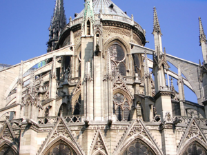

Paristechinois
背景情况
法国的高等教育制度
Study in France. Allez !
张辰
与世界上大多数国家不同,法国目前依然实行一套历史沿袭的独特的教育制度。对于 法国普通的高中生,在完成高中学业后,都需要参加 BAC 考试。此后,大多数毕业生选择 申请 préparatoire,通常翻译为大学预科。各所 préparatoire 学校会对申请者的材料进行严格 筛选和评定,最后只有一小部分各方面表现都很优秀的学生才能被录取。没有被 préparatoire 录取的学生则进入大学学习,也就是我们较常听到的 Université。在 préparatoire 的两年极其 辛苦,科目繁多,课程紧张,每周都会有各种笔试和口试,对于法国学生来说,经历过 préparatoire,就是一种至高的荣耀。而且也只有通过这两年的学习,才有资格参加新一轮竞 争更为激烈的考试,根据考试结果进入不同的 Grande école(工程师学校)学习。
对于中国学生来说,往往是法国的大学具有更高的知名度,首先因为法国的大学在办 学规模和科研成就上确实取得了不少成绩,如巴黎索邦大学;其次由于法国的 Grande école 规模普遍比较小,在全世界高等院校排名上难觅踪影;最后一个原因,如果将法国 Grande école 的完整名称直译过来,与中国所有学生都能进入的大专类似,比如 ENSTA 翻成国立 高等先进技术学校,使得很多中国学生产生误解,甚至都不愿意去申请一所“法国大专”。
然而,根据之前对于法国高等教育制度的简单介绍,不难看出,在法国,Université的 门槛相对较低,相反,Grande école 才是真正精英的学校。这一点与法国企业界的态度,以 及毕业生的薪酬水平也可以得到很好的印证。
巴黎高科(ParisTech)
巴黎高科的全称是巴黎高科技集团,由10所不同领域的Grande école组成,都是在各 自专业领域内数一数二的,比如有法国理工科第一院校 Ecole Polytechnique(综合理工)、居 里夫人的母校 ESPCI(高等物理化学学校)、出过诺贝尔奖得主的 ENSMP(高等矿业学校) 等等。中国学生在综合理工要读4年,但是有一小部分学生只需要3年,即从第二年开始读, 这个取决于对方教授的评审。其他几所学校除了物理化学学校要读 3 年,都是 2 年学制,学 生顺利完成学业后,可以获得工程师文凭。对于毕业之后的出路,根据学校不同情况也有差 异,但是据我所知,有不少师兄师姐都找到了非常不错的工作,还有不少人有很牛的实习经 历,再加上工程师文凭在法国来说比硕士要好,即使回到国内,在申请法资企业时也很有竞争力。
AgroParisTech
再重点介绍一下我现在所在的学校 AgroParisTech。去年年初,INA-PG(国立农艺学校)、 ENGREF(国立林业、水和环境学校)以及 ENSIA(国立高等农业与食品工业学院)合并成 为 AgroParisTech,其中 INA-PG 和 ENGREF 每年通过都巴黎高科项目录取中国学生。INA-PG
规模较大,是法国在农业方面最好的学校,其他的专业设置也较为齐全;ENGREF 小而精 悍,在水、林业、环境管理等方面更具优势。具体选择报哪个方向,可以到学校的网站上详 细了解课程情况,根据自己的专业背景和兴趣来申请。就我的情况来说,环境管理是我感兴 趣的方向, 恰巧是 ENGREF 的强项;另外,ENGREF 的课程非常有趣,不同的课程在不同 的城市上,需要一直过着迁徙的生活,并会让学生承担 project,从中培养解决实际问题的能 力,除了课堂 project 还有在公司的实习机会。这些都让我相信,在法国的两年,自己会在 充满变化的生活中学到许多新的东西。
AgroParisTech 的申请过程 参考申请时间表
每年9月:
关注学校外事处网站,密切留意巴黎高科的报名通知
9月中旬—10月初:
按照网上通知要求准备材料,email给法方同时,准备笔试科目 (高等数学、大学化学)
10 月中下旬:
笔试和面试 (申请动机,未来规划等)
然后是较为漫长的等待,直到 12 月中旬公布录取结果。
录取标准
虽然学校并没有对绩点做出明确的要求,但肯定不能太差,因为在第一轮的申请材料筛 选过程中,学校只有通过这些硬性指标才能了解一个学生的能力。通过材料的初审后就是笔 试,以我的个人经验,只要好好复习,通过笔试还是不成问题的,在面试中老师可能和你仔 细讨论考试的情况,分析各部分的知识掌握得如何。第三步面试非常重要,对于学生来说是 非常好的机会和学校老师面对面交流,要全面地展示自己,真诚表达自己留学法国的初衷、 为什么申请这个学校以及未来的打算,要让面试官觉得你就是最适合他们学校的,你在专业 领域上也有很大的发展潜力,这样一份心向往之的坚定肯定会让面试官在对你的评价上加分 不少。
作者简介：
张辰
张辰谈申请

2012年5月13日星期日